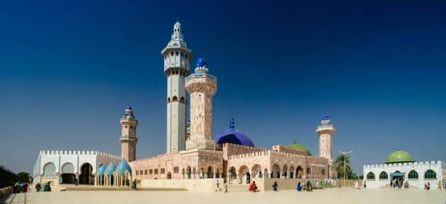

LA VILLE SAINTE DE TOUBA

La ville sénégalaise de Touba a une empreinte religieuse forte avec sa confrérie musulmane , située à 194 km à l'est de la capitale Dakar3 dans le département de Mbacké. Elle est la deuxième ville la plus peuplée du pays, derrière la capitale Dakar, avec plus d'un million d'habitants, et une agglomération comptant, selon les sources, entre 1 000 000 et 1 500 000 habitants en 2018.. Fondée en 1887, elle est aujourd’hui une belle ville urbanisée.Le mot Touba vient de l'arabe طُـوْبَىٰ (ṭūbā), qui signifie « félicité » ou « béatitude ».D'après Abou Sa'id Al Khoudri, le Prophète a dit: « Touba est un arbre dans le paradis. Sa taille est équivalente à la distance que l'on parcourt en cent ans et les habits des gens du paradis sont issus de la pellicule qui couvre le fruit de cet arbre ». Ne manquez pas de visiter la grande mosquée de Touba ou la bibliothèque avec les écrits du fondateur de la cité, à savoir Cheikh Ahmadou Bamba.
« Mon trésor est le saint Coran, la tradition du prophète et les règles de bonne conduite, nullement l’accumulation d’argent ou d’or ». Cette prose tirée des écrits de Cheikh Ahamadou Bamba, traduite en français et en anglais puis accrochée sous forme de banderole dans la salle de lecture de « Daaray Kaamil » suffit à montrer ce que représentent, ici, les « xasaïd » et les exemplaires du saint Coran gardés dans la bibliothèque pour Cheikh Ahamadou Bamba et la communauté mouride. Une autre prose sous forme de tableau d’art qui orne une autre partie de la salle.
Le 18e jour du mois de safar de l’hégire, tout le pays du Sénégal vit au rythme de la fête du Magal de Touba. Les différentes populations participent à cette commémoration du départ en exil du fondateur. Des séances religieuses comme des offrandes de repas sont réalisées. A cet événement le Senegal enregistre un important gain de capitaux montrant aisi l'ampleur de cette cérémonie